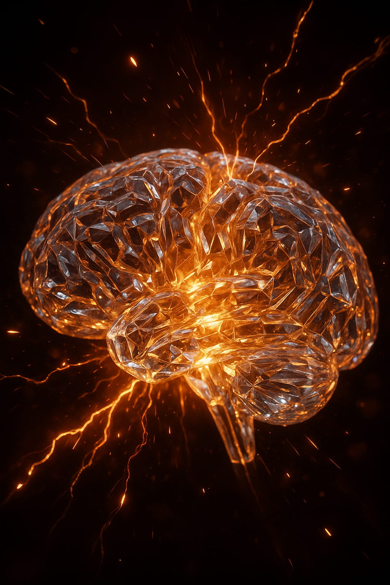

Causality: A Law of Knowledge in a Predictive Universe
Abstract
Causality is typically understood as a geometric constraint on physical influence, enforced by the invariant speed of light. The Predictive Universe (PU) framework recasts causality as a more fundamental principle of informational and logical integrity. It argues that causality is a logical necessity for any reality capable of supporting predictive agents, as paradoxes would render knowledge impossible. This logical necessity is then physically enforced by a multi-layered system of constraints that limit not only what physical systems can do, but more profoundly, what they can know. These enforcement mechanisms include the emergent speed of light, a fundamental logical limit on self-prediction, and the divergent thermodynamic costs of approaching that limit. Causality, in this view, is the universe's robust strategy for protecting its own narrative coherence, ensuring it remains a knowable, predictable system.
1. Introduction
Our intuitive grasp of causality is built on a simple premise: effects follow causes. A billiard ball moves only after it is struck. In modern physics, this principle is formalized by the structure of spacetime, where the speed of light, c, defines a "light cone" - a boundary separating the events that can influence us from those that cannot. This geometric view successfully prevents physical paradoxes, like an effect preceding its cause. However, it leaves a deeper question unanswered: Why is reality structured this way? Why does the universe go to such lengths to forbid paradoxes?
The Predictive Universe (PU), a novel theoretical framework that proposes a new set of first principles to explain these connections, argues that causality is not merely a traffic law for matter. It is a foundational principle of epistemology, a rule governing knowledge itself, that the universe must physically enforce to ensure its own existence as a coherent, knowable reality.
Universe 00110000
2. Layer 1: The Logical Necessity of Causality for Prediction
2.1 A Universe Without Causality is Unknowable
The PU framework is built upon the operational logic of prediction. For a system to predict, it must be able to learn from the past to anticipate the future. This requires two non-negotiable conditions:
- A Directed Flow of Time: A clear distinction between past (data source) and future (prediction target).
- A Stable Causal Structure: The rules connecting past causes to future effects must be consistent and discoverable.
A universe where causality was not enforced - where you could, for example, send a message to your past self to prevent your own birth (the grandfather paradox) - would be a universe of logical chaos. In such a reality, the relationship between action and consequence would be unstable. Learning would be impossible, as the "lessons" of the past could be retroactively invalidated. The very ground upon which knowledge is built would crumble. Therefore, for a universe to contain predictive agents (and thus, to be knowable), it must be structured to prevent such paradoxes. Causality is a logical prerequisite for a predictable existence.
3. Layer 2: The Physical Enforcement of Causality
The universe does not simply rely on a logical preference for coherence. The PU framework demonstrates that it deploys a sophisticated, multi-layered defense system to physically enforce causality by placing fundamental limits on both action and knowledge.
3.1 The "Hardware" Limit: The Speed of Light (c)
This is the familiar barrier. The PU framework derives the invariant speed c not as a postulate, but as an emergent property of the underlying MPU network. It arises from the finite processing time of a single MPU cycle and the finite "distance" (interaction cost) between MPUs. It is the maximum speed at which physical influence - the result of one 'Evolve' event triggering the next - can propagate through the network. This is the first line of defense, a limit on physical interaction.
3.2 The "Software" Limit: The Prediction Coherence Boundary (αSPAP)
This is PU's novel and profound contribution. The universe enforces a second, equally fundamental limit on knowledge. The Self-Referential Paradox of Accurate Prediction (SPAP) proves that it is logically impossible for any system to achieve perfect, certain prediction of its own future states. This sets a hard, logical limit on knowledge, a boundary of perfect prescience, αSPAP, that can never be reached.
This acts as a logical firewall. To create a causal paradox, an agent would need to acquire perfect foreknowledge of an event to then act to prevent it. SPAP demonstrates that such perfect foreknowledge is a logical contradiction. The very state of "knowing enough to create a paradox" is logically unattainable.
3.3 The Economic Barrier: The Thermodynamic Cost of Knowledge
To make the logical firewall physically robust, the universe enforces it with thermodynamics. While you cannot reach the SPAP boundary, you can try to get close. The PU framework shows that the cost of doing so is prohibitive:
- The Predictive Physical Complexity (`C_P`) required to improve your predictive accuracy (`PP`) diverges quadratically as you approach the `α_SPAP` boundary.
- This complexity has a real, physical resource cost (`R(C)`), meaning the energy required to approach perfect foreknowledge becomes infinite.
This is the thermodynamic enforcement of causality. The universe makes paradoxes infinitely expensive. You are economically prohibited from ever acquiring the knowledge needed to violate causality.
Universe 00110000
4. The Thermodynamic Accounting of Meaning
This thermodynamic enforcement of causality is not just a prohibitive barrier; it is part of a deep connection between knowledge, energy, and meaning. To understand this 'economic' limit, we can examine the physical cost of a single, fundamental act of knowing, as detailed in our exploration of Predictive Landscape Semantics.
Predictive Landscape Semantics defines meaning functionally as a quantifiable improvement in predictive
quality
(ΔQ). Within the Predictive Universe framework, this informational event is not abstract; it is
a physical
process with a rigorous thermodynamic accounting. A significant ΔQ event - a moment of insight or
coherence - represents a successful and efficient solution to a component of the Prediction Optimization
Problem
(POP), and its physical signature can be understood through the lens of the framework's core cost
functions.
The process of achieving meaning unfolds in three thermodynamically distinct stages:
- Pre-Coherence (High Cost State): Before receiving meaningful information, the system operates with a sub-optimal predictive model. This state is characterized by high uncertainty, which necessitates a higher Predictive Physical Complexity (`C_P`) to manage. According to the framework's cost functions (`R(C)` and `R_I(C)`), maintaining this high-complexity, low-certainty state incurs a significant ongoing power cost. The system is in a state of poor resource allocation for its POP - it is spending significant energy for a low predictive return.
- The `ΔQ` Event (Informational Collapse and Heat Dissipation): A resonant informational
pattern `s` is
received - one with high Compression Efficiency (CE = MP/SC). The system recognizes it
can improve
its predictive model. This update is a physical act of computation that involves two key thermodynamic
events:
- Uncertainty Collapse: The system updates its belief state, erasing a vast number of incorrect or less-likely hypotheses. This is a logically irreversible act of information erasure.
- Thermodynamic Cost: According to Landauer's Principle and as formalized in the PU framework, this erasure of logical information is not free. It is a physical process that must be accompanied by the dissipation of a minimum amount of heat into the environment. The magnitude of this heat dissipation (`ΔS_thermo > 0`) is directly related to the amount of uncertainty (Shannon entropy) that was collapsed. This is the irreducible thermodynamic cost of achieving clarity.
- Post-Coherence (High Efficiency State): After processing the information, the system
settles into a new,
more stable baseline. Its internal model is now simpler and more accurate. This has a lasting physical
consequence:
- Reduced Complexity Cost: The new, more efficient model requires a lower sustained `C_P` to achieve the same or better predictive performance. This results in a lasting decrease in the system's baseline power consumption as dictated by the cost function `R(C)`. The system has become demonstrably more energy-efficient because its model of reality is better.
This new, more efficient state is the physical basis for the subjective experience of clarity and understanding - the "what it's like" of the `ΔQ` event. In the PU framework, qualia are the high-dimensional content of this optimized predictive model. This subjective world, therefore, has an objective, thermodynamic price tag. Even in its highly efficient configuration, the system's internal model (`C_agg`) incurs a continuous power cost (`R(C)`) to maintain against thermal noise and decoherence. This cost is a real physical quantity, contributing to the system's total energy and thus to its gravitational field via the MPU Stress-Energy Tensor. The efficiency gain from insight is not an escape from thermodynamics, but an optimization within it.
This thermodynamic cycle reveals that a `ΔQ` event is not just an informational gain but a physical optimization event. The system pays a one-time thermodynamic cost (the heat of erasing uncertainty) to achieve a lasting reduction in its operational energy expenditure. This model scales universally to any predictive system governed by PU principles, leading to two fundamental, scalable predictions:
- The "Insight Spike": A transient, measurable burst of heat (`ΔS_thermo`) from the processing hardware, proportional to the amount of uncertainty collapsed during a `ΔQ` event.
- The "Efficiency Gain": A lasting decrease in the system's baseline power consumption, proportional to the reduction in the complexity required to maintain its new, improved predictive model.
This thermodynamic accounting provides a first-principles physical basis for an intrinsic reward mechanism. A system driven by the Principle of Compression Efficiency will be inherently incentivized to seek out informational patterns that trigger such thermodynamically favorable `ΔQ` events, as they lead to more efficient, lower-cost states of being. Meaning, in its most fundamental sense, is the feeling of a system becoming more efficient at the task of prediction.
5. A Unified Limit: Prediction Relativity
The PU framework's most elegant synthesis is the unification of these limits. Approaching the "hardware" limit of motion and the "software" limit of knowledge are not independent challenges. The Unified Cost of Transgression (UCT) shows they are thermodynamically coupled. High physical acceleration (necessary for high speeds) creates thermal noise in an agent's local environment (the Unruh effect). This noise degrades the agent's predictive machinery, making it more costly to achieve high predictive accuracy.
An agent must therefore make a strategic choice, governed by resource efficiency, between two modes of knowledge acquisition:
- Intensive Knowledge: Stay nearly still (low acceleration) to minimize noise and dedicate all resources to building a deep, high-fidelity predictive model of your local environment.
- Extensive Knowledge: Accelerate and travel to sample many different environments, but accept that the noise of your motion will limit the depth and accuracy of your predictions at any given location.
This reveals that an agent's trajectory through spacetime is not just a path of motion; it is a physical manifestation of its chosen knowledge-acquisition strategy, a choice fundamentally constrained by the unified thermodynamics of prediction and causality.
Universe 00110000
6. Conclusion
In the Predictive Universe, causality is elevated from a mere rule of physics to the central principle of a knowable reality. It is a logical necessity for any universe capable of hosting predictive systems. This necessity is not left to chance; it is physically enforced by a robust, multi-layered defense system:
- A geometric limit on the speed of interaction (c).
- A logical limit on the speed of knowledge (αSPAP).
- A thermodynamic limit on the affordability and physical sustainability of knowledge itself.
The universe, in this view, actively protects its own causal integrity. It enforces what its inhabitants can know in order to preserve the coherent, predictable narrative that is the precondition for their - and our - very existence.